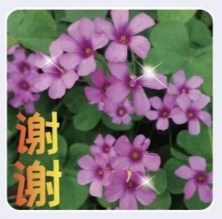
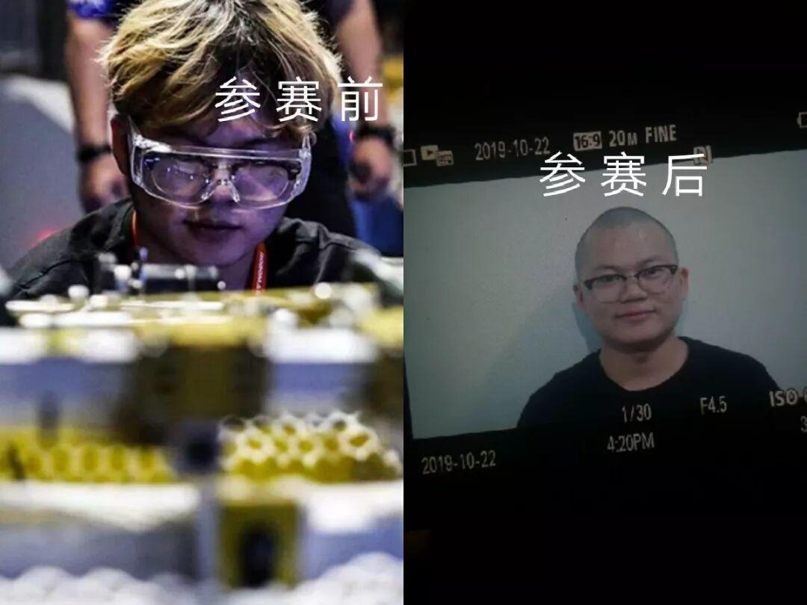
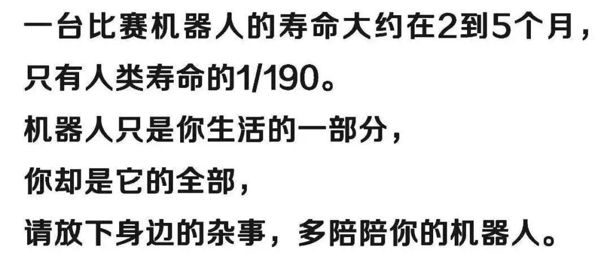

感恩节的小采访
11月的第四个星期四
你有意识到今天是感恩节吗？
啥？感恩节？（拿着扳手的你回头问）
没关系，机智的我适时出现并且提醒
顺势还展开了一段小采访
......

感恩节的存在
就是为了让平时没有说出口的感激
有一个名正言顺表达出来的理由
在这一天，对值得自己感恩的一切
勇敢的说一声"谢谢"
生活中你最想感谢谁呢？为什么？
如果你要在今天和他/她/它说句话
你会说什么？
（来自小编感恩节问题三连）
经过小编的整理，回答共分为四类
👇👇👇
感恩父母类
电控组小于同学
我的父亲，他是最慈祥也是最疼爱我的人，我做错事他都会包容并且耐心的教我改正，每当我不懂事乱发脾气，他都容忍我的脾气。爸爸这些年你辛苦了，等我大学毕业儿子养你。
虽然我可能忘记了感恩节是哪天
但我最想感恩的人从来都有你
运营里的花手担当
我最想感谢的就是我的父母，不仅感谢他们给我生命，更感谢他们养育我，教育我，支持我。如果说世界上最爱我的人，生气后最容易哄好的，那就是我的父母了。一句话我想对他们说：对自己好点😊
其实很多孩子，比家长想象中更懂得爱
他知道父母的操劳 明白父母的付出
可能都羞于表达
可能已经到了感恩说不出口的年纪
没关系，这篇推文帮你记录

感恩老师类
手握财政大权的“老板”
最想感谢老师吧，他们教会了我知识，和做人的道理，让我们将来能够使用这些知识，实现自己的价值，最想对老师说：老师，您辛苦了~
虽然回答较为官方
但字里行间还是可以看出这位同学的真诚😆
信息部学妹
我最想感谢我的语文老师，在张老师的课堂上，她创造了很多培养我们各方面能力的机会，比如个人演讲，古诗词讲解，时事评论。来到大学之后，才意识到张老师的良苦用心。桃李不言，下自成蹊，您的培育之恩一定会牢记在心。
好有文采一学妹
所以要感谢语文老师教得好😉

（配一个适合老师的表情包）
一块黑板 一根粉笔
三尺讲台 一生追求
默默游走于岁月里的老师
谢谢您，教会我知识和道理
谢谢您，激励我成长

感恩朋友类
信息部最能喝的刘学弟
我的舍友卞（bian）建生，每天都伺候我，给我带饭带书倒垃圾，取快递，还帮我找女朋友（估计这个是主要原因）。感谢我的舍友卞建生，每天辛苦的伺候着大哥，大哥希望你的前途一片光明！
宣传大佬某梦
生活中最想感谢的是谁……当然是赐予我生命的老爸老妈～除此以外就是感谢这个美妙的世界让我遇见许多美好的人和事物，比如大学除了舍友还有一群一起经历过rm比赛的队友，让我有机会见证一个个少年的头发“成长”过程…… 👇

为啥？收获颇多，可以有免费表情包，我知道熬夜是世界上最快乐的事情，我知道机器人比女朋友重要……机器人不会问你“如果我和你女朋友掉进水里你先救谁”……
所以，有时间请多陪陪你的“大儿子”

（此图说明原因）
视觉组王同学
感谢步兵
因为他带领我们走向dj冠军席
步兵步兵 无敌步兵
（步兵是我们的好朋友，所以理应放在这部分😆）
有你们的日子 孤独从未光顾
忧愁可以分担 快乐也能共享
谢谢你们的出现
温暖了我的岁月

除以上三类类
财务部霍同学
我想我最应该感恩的是这片生育我的土地。您历经岁月沧桑，把每一寸土地都浸染文化笔墨，亦使诗情画意融入我们心中。也许您不够完美，但您的脉搏早已和我相通。
小伙子
文采这么好，信息部欢迎你~
自称为单身贵族的少年
生活中我最想感谢的是我未来的女朋友
正因为心中有你的存在才给我无限向上的动力，才使我愿意去努力学习并参加很多的活动，去全面发展自己。
而我最想说的话是，你现在站在那里等着我，我好拼命去追你啊！不用我一点点慢慢寻找。
为了能在以后的岁月里遇到更好的人，今天的我们更要倍加努力，嗯，很有道理~

感恩节
意在感谢生命中遇到的一些人和事
这个源自西方的节日
深受世界人民喜爱
不同的国家有不同的庆祝方式
不变的是
❤我们都怀着感恩之心❤
小编也非常感谢屏幕前正在看推文的你
如果我曾温暖你
那是对你深深的祝福和感谢
特别感恩粉丝中的一位
我的奶奶
因为我的每篇推文她都点了“在看”
什么？你问我在哪点？你也要给我点在看？
右下角的小花
把蓝色点成黑色就好了~
END
编辑：杜遇涵